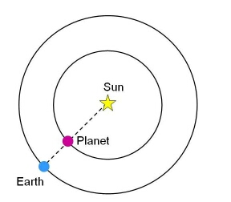
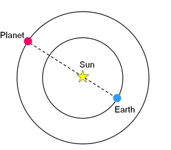

A solar system body, such as a planet, comet or asteroid, undergoes a conjunction when it has the same right ascension as the Sun as seen from the Earth. This means that the Earth, Sun and the object all lie along a straight line. At conjunction, the elongation of the body is zero degrees.
|

A planet at inferior conjunction, on a line between the Earth and the Sun.
|

A planet at superior conjunction, in a line with the Earth and the Sun, but on the opposite side of the Sun from the Earth.
|
Solar System objects that are in orbits closer to the Sun than the Earth undergo an inferior conjunction when they lie between the Sun and the Earth. All solar system objects reach superior conjunction, when they are on the opposite side of the Sun to the Earth.